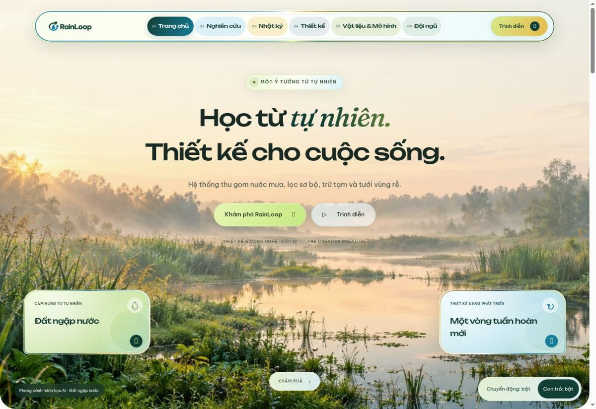
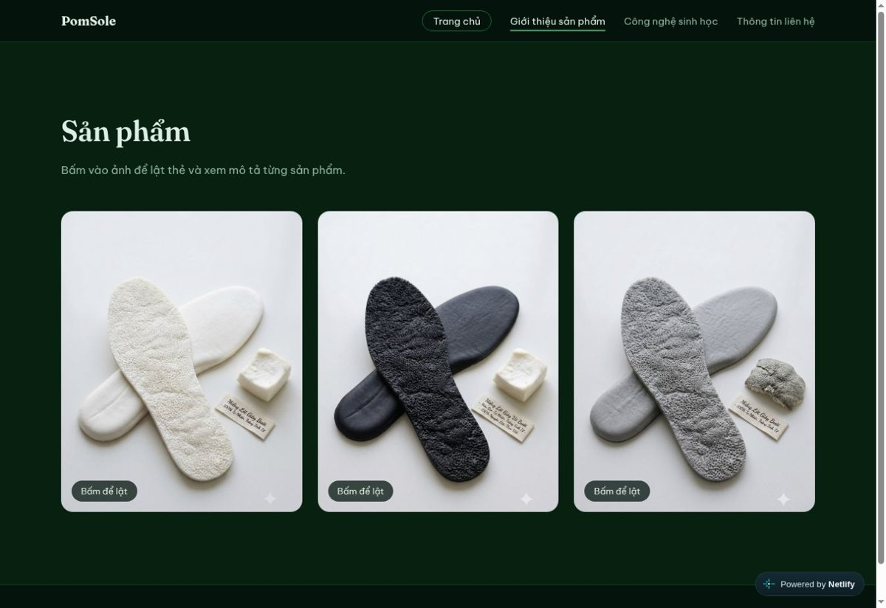
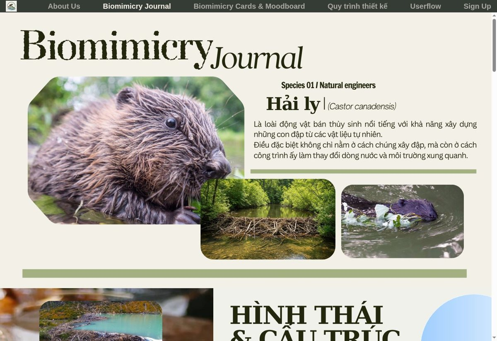
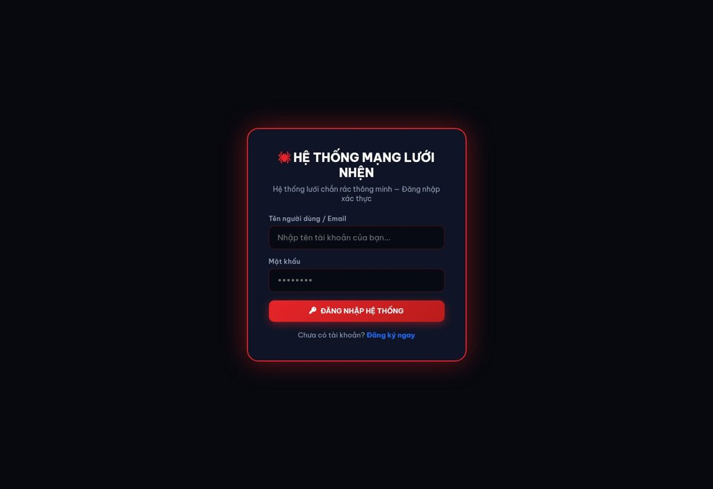
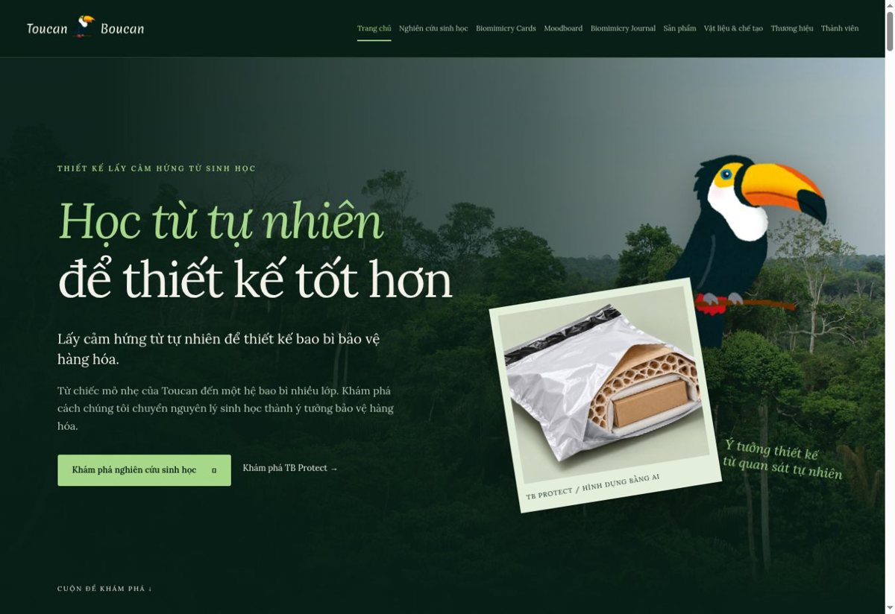

Bộ sưu tập
Không gian dự án

RainLoop
Thu và tái sử dụng nước mưa trong sân trường.

PomSole
Từ cấu trúc vỏ bưởi đến thiết kế đế giày.

Biomimicry Journal
Nhật ký quan sát sinh vật và phát triển ý tưởng.

Hệ thống Mạng Lưới Nhện
Ý tưởng lưới chắn rác trên sông Sài Gòn.

Toucan Boucan
Bao bì bảo vệ hàng hóa lấy cảm hứng từ mỏ chim.